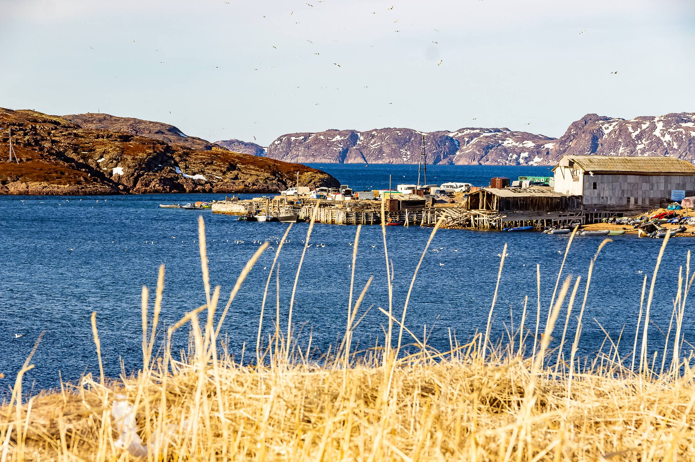
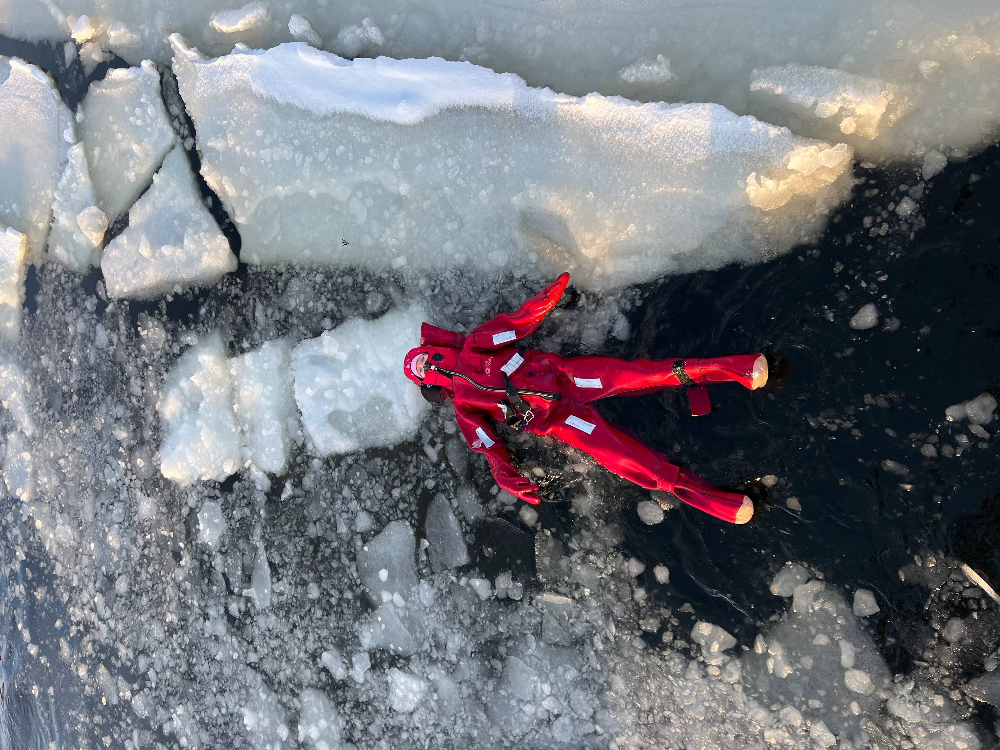

Ivan Aurora Tour — Kola Peninsula Expeditions
Hi! I’m Ivan, a state-certified local guide and Aurora photographer in Murmansk. Join me for Northern Lights hunting, Teriberka coastal trips, Ice Floating & Arctic nature adventures.
Arctic Odyssey Tour Packages
Designed around your flight arrival day plus full days of Arctic adventures.
Arctic Odyssey — Basic
- Airport pick-up ONLY
- Teriberka tour
- Sami village & husky park (Reindeer sleigh ride, subject to snow cover)
- 1 Northern Lights hunting
- Meals & Hotel
- Husky sledge ride (6,500 RUB)
- Ice floating (6,000 RUB)
- Snowmobile safari 1h (6,000 RUB)
Arctic Odyssey — Double Aurora & Complete
Includes airport pick-up (and drop-off for Complete), Teriberka tour, Sami village, up to 2 Northern Lights hunts, and optional activities like ice floating or snowmobiling. Full details and individual activity blocks (Northern Lights, Teriberka, Ice Floating, Snowmobile Safari, Saami Village) along with the traveler FAQ are structured below.
Single Activities & Experiences
Explore each activity in detail or combine them into your custom itinerary.

Northern Lights Hunting
Night chase away from city lights using solar wind & cloud forecasts, including professional night photography.
Read more →
Teriberka Village & Arctic Ocean
Full-day expedition to the edge of the Barents Sea: ship graveyard, Dragon Eggs beach, waterfall & fresh king crab.
Read more →
Ice Floating (6,000 RUB)
Relax safely in a buoyant thermal suit among Kola Bay ice floes — no swimming skills required.
Read more →
Snowmobile Safari (6,000 RUB / 1h)
Drive across snowy Arctic hills and frozen lakes with full safety briefing and winter gear.
Read more →
Saami Village & Husky Park
Meet indigenous reindeer herders, feed Arctic reindeer, and enjoy husky interactions (sled ride +6,500 RUB).
Read more →FAQ for International Travelers
How can I pay if foreign Visa/Mastercard cards don't work in Russia?
No worries — we arrange convenient payment options in advance (including cash RUB/EUR/USD upon arrival or alternative transfer methods). Message me on WhatsApp before your trip so we can agree on the easiest option for you.
How do I get to Murmansk?
Direct flights to Murmansk Airport (MMK) take about 2.5 hours from Moscow and 2 hours from St. Petersburg, with multiple flights daily.
What clothes do I need for Arctic winter?
Thermal base layers, fleece mid-layer, windproof winter parka, insulated waterproof boots, warm hat, and mittens. Temperatures range from -5°C to -25°C, and wind near the Barents Sea feels colder.